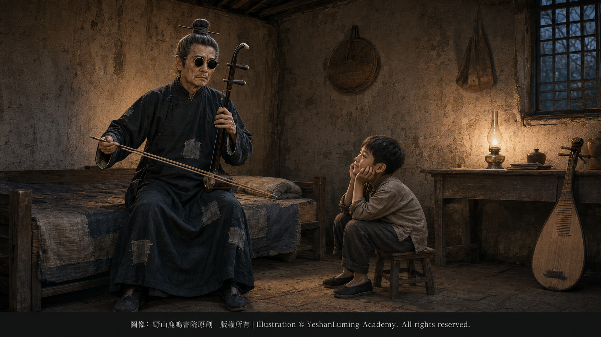

琴弦上的絕響·《二泉映月》的傳世之謎A Swan Song on the Strings · The Mystery of How The Moon Reflected on the Second Spring Survived
China’s Beethoven · Blind Musician AbingA Swan Song on the Strings · The Mystery of How The Moon Reflected on the Second Spring Survived
China’s Beethoven · Blind Musician Abing琴弦上的絕響·《二泉映月》的傳世之謎
中國的貝多芬·瞎子阿炳
中國的貝多芬·瞎子阿炳（108）China’s Beethoven · Blind Musician Abing (108)
一生命運坎坷、晚年貧病交加的民間音樂家阿炳，本名華彥鈞。他在苦難的生活中演奏、加工並創作了大量民間樂曲，其中不乏足以傳世的作品。
然而，在當年的無錫街頭，幾乎沒有人能夠真正認識到他音樂中蘊藏的巨大藝術價值。在許多匆匆而過的路人眼中，他不過是一個雙目失明、窮困潦倒，為了活命而在街頭拉琴賣藝的可憐盲人。
如果沒有一位比阿炳小二十八歲的鄰居少年黎松壽，阿炳的音樂能否及時引起專業音樂界的注意，能否趕在他去世以前被記譜、錄音，恐怕都將成為無法回答的歷史疑問。
今天那首震撼世界的二胡名曲《二泉映月》，也可能再沒有機會流傳於世。
然而，歷史的巧合往往令人驚歎。
上個世紀三十年代，阿炳雙目失明，從一名道觀當家道士·，淪為街頭盲藝人。此時，他仍然住在無錫圖書館路雷尊殿內一間破舊狹小的矮平房裡。
這間房子面積不大，陳設簡陋，家具破舊。當時還只是一個小男孩的黎松壽，就住在圖書館路四號，與阿炳的住處近在咫尺。
巧合？緣分？還是天意？
一生命運坎坷、晚年貧病交加的民間音樂家阿炳，本名華彥鈞。他在苦難的生活中演奏、加工並創作了大量民間樂曲，其中不乏足以傳世的作品。
然而，在當年的無錫街頭，幾乎沒有人能夠真正認識到他音樂中蘊藏的巨大藝術價值。在許多匆匆而過的路人眼中，他不過是一個雙目失明、窮困潦倒，為了活命而在街頭拉琴賣藝的可憐盲人。
如果沒有一位比阿炳小二十八歲的鄰居少年黎松壽，阿炳的音樂能否及時引起專業音樂界的注意，能否趕在他去世以前被記譜、錄音，恐怕都將成為無法回答的歷史疑問。
今天那首震撼世界的二胡名曲《二泉映月》，也可能再沒有機會流傳於世。
然而，歷史的巧合往往令人驚歎。
上個世紀三十年代，阿炳雙目失明，從一名道觀當家道士·，淪為街頭盲藝人。此時，他仍然住在無錫圖書館路雷尊殿內一間破舊狹小的矮平房裡。
這間房子面積不大，陳設簡陋，家具破舊。當時還只是一個小男孩的黎松壽，就住在圖書館路四號，與阿炳的住處近在咫尺。
巧合？緣分？還是天意？
黎松壽從小就非常喜愛音樂，而且正在學習二胡。兩家住得很近，這使他有了接近阿炳、向阿炳請教琴藝的機會。
阿炳非常疼愛孩子，對黎松壽這樣熱愛音樂的後輩尤其親近。為了學習琴藝，黎松壽經常到阿炳家中，待在一旁，專心聆聽他拉二胡、彈琵琶。

Click to enlarge
在黎松壽後來的回憶中，有一段旋律給他留下了極為深刻的印象，那正是後來名揚世界的《二泉映月》。無論心情好壞，阿炳都經常拉奏這段旋律。它平靜無華，卻又如泣如訴，彷彿一個飽經苦難的人，在向這個冷酷的世界訴說自己的悲哀、憤怒與不甘。
這段旋律一次又一次飄進黎松壽的耳中。聽得久了，黎松壽憑藉著對音樂的敏銳感受和驚人的記憶力，把這段優美而又蒼涼的旋律默默記在了心中。
長大以後，黎松壽仍然經常與阿炳往來。他有時幫阿炳讀報紙，有時協助他調音、換弦。有一次，黎松壽試著在阿炳面前拉起了那段早已熟記於心的旋律。
阿炳聽後十分吃驚，問他是從哪裡學來的。
黎松壽笑著回答，因為經常聽阿炳拉奏，自己又非常喜歡，聽得多了，自然而然便記住了。
黎松壽順口問道：「這首曲子叫什麼名字？」
阿炳嘆了一口氣，回答說：「這是我自己瞎編的，平時瞎拉拉，沒有名字，也沒打算傳給別人。」
到了上個世紀四十年代末，黎松壽師從劉天華先生的大弟子、著名二胡演奏家儲師竹先生學習二胡。
1949年冬天，一堂課開始以前，黎松壽為了活動手指，無意間隨手奏出了那段從少年時代起便深深印在腦海中的旋律。
站在一旁的儲師竹聽得入了迷，突然打斷他：「停一下，停一下。這是什麼曲子？」
面對老師突如其來的詢問，黎松壽回答：「這是無錫一位民間藝人瞎子阿炳上街賣藝時，經常邊走邊拉的曲子。」
「這是什麼人作的？曲名叫什麼？」儲師竹接連追問。
黎松壽無奈地笑了笑：「就是阿炳自己作的。我曾經問過他好幾次，這首曲子叫什麼名字，他總是說，那不過是自己瞎拉拉的，沒有什麼名字。」
儲師竹立刻要求：「你能不能把這首曲子完整地拉一遍？」憑藉著兒時留下的清晰記憶，黎松壽從頭到尾，把整首曲子演奏了一遍。
儲師竹凝神屏氣地聽完，異乎尋常地激動。他稱讚道：「這是一首嘔心瀝血的傑作，絕不是隨隨便便瞎拉拉就能拉出來的！」
隨後，儲師竹詢問黎松壽是否認識這位作曲者。
黎松壽解釋說，自己家與阿炳的住處距離很近，兩家相處得也很好。接著，他簡明扼要地講述了阿炳坎坷悲慘的一生。
據黎松壽晚年的回憶，就在兩人談話時，著名音樂教育家、民族音樂學家楊蔭瀏先生走進房間，聽到了他們的對話。
楊蔭瀏感嘆道：「你們說的這個華彥鈞，我知道。 我十一歲時便跟他學過琵琶。那時他只有十七八歲，卻已經是無錫城裡很有名的音樂道士了。他確實極有才華。後來他雙目失明，我還曾經向他討教過梵音鑼鼓。」
黎松壽隨後向兩位先生介紹了阿炳當時的處境，此時的阿炳已經身患重病，時常咯血，無法出去賣藝，生活極為艱難，只能依靠妻子董催弟以及親友的幫助勉強度日。
楊蔭瀏聽後深感憂慮，叮囑黎松壽下次回到無錫時，設法把阿炳的樂曲盡可能多地記錄下來。
這個具有遠見的建議，成為後來搶救阿炳音樂的重要一環。
1950年清明前後，黎松壽回到無錫，特意前去探望阿炳。此時的阿炳面色黃中泛青，身體比以前更加清瘦，但精神尚可。寒暄過後，黎松壽提出想聽阿炳拉一首曲子，並特意指明，要聽他從前每天晚上邊走邊拉的那一首。
阿炳幾番推辭，但經不住黎松壽一再央求，最後還是答應了。
他調好琴弦，深深吸了一口氣。琴弓一揮，那段情景交融、如泣如訴的旋律，便再次在狹小破舊的房間裡迴盪起來。
一曲終了，黎松壽問道：「這首曲子在無錫已經家喻戶曉，您為什麼不給它取一個好聽的名字，總是說它是瞎拉拉的呢？」
阿炳哈哈大笑：「你以為我哄你？它哪有什麼名字？反正也沒有人想學。」
黎松壽立刻接過話頭：「我們都想學！楊先生和我的老師都非常喜歡您的曲子。他們讓我把它寫成曲譜，將來介紹給音樂學院學習二胡的學生，讓這首曲子一代一代傳下去。」
阿炳有些不好意思地嘟囔道：「那不是把我的醜出到音樂學院去了？」
「這可不是出醜丟臉。楊先生對您的音樂非常讚賞。」黎松壽誠懇地回答。
「真的嗎？」阿炳半信半疑。
為了把這首曲子盡可能準確地記錄下來，黎松壽請求阿炳再演奏幾遍，而且拉得越慢越好。
阿炳聽後，便配合著從頭到尾又拉了兩遍。參與這次記譜的，還有黎松壽的妻子曹志偉。
夫妻二人一邊聆聽，一邊反覆核對。遇到難以準確記錄的地方，他們便請阿炳放慢速度，有時還請他把同一段旋律重複演奏幾遍。
黎松壽發現，阿炳這次演奏的主旋律，與自己依靠記憶記下來的曲譜並沒有太大差別，只是在幾處細節上作了修正。他還詳細記錄了阿炳演奏時所使用的弓法與指法。
經過反覆聆聽、比較和校訂，這首日後名揚中外的二胡獨奏曲，終於第一次被較為完整地記錄在曲譜上。
回到南京後，黎松壽將記錄下來的曲譜交給儲師竹和楊蔭瀏兩位老師審閱。
兩人看過曲譜後驚嘆不已，追問阿炳是否還會演奏其他樂曲。
黎松壽回答，阿炳不僅擅長二胡，而且精通琵琶。他一生演奏過的民間樂曲，可能多達數百首。
但是，黎松壽也清楚地意識到，無論曲譜記錄得多麼細緻，都不可能完全還原阿炳高超而又獨特的演奏技巧。同一個音符，由不同的人演奏，效果可能完全不同。
阿炳的琴聲中，不僅有旋律，而且有他的呼吸、節奏、力量和情感；有他半生的屈辱與苦難，也有他不肯低頭、不甘沉淪的倔強。真正能夠保存阿炳音樂的最好方式，不只是留下曲譜，而是直接把他的琴聲錄下來。
1950年，中央音樂學院在天津正式成立。原國立音樂院等多所院校的音樂教育力量經過調整、合併，成為新學院的重要組成部分。學院隨後建立民族音樂研究機構，楊蔭瀏、曹安和、儲師竹等音樂家參與了相關的民間音樂調查與研究工作。
不久以後，儲師竹告訴黎松壽，音樂研究機構剛剛配發了一台從國外進口的攜帶式鋼絲錄音機。在那個百廢待興、專業設備極度匱乏的年代，這是一件十分稀少而且珍貴的錄音器材。
黎松壽得知這個消息後，想到阿炳的健康狀況已經十分危險，立即致信楊蔭瀏，說明阿炳病情嚴重，希望他們盡快前往無錫，搶救性地錄下阿炳的演奏。
楊蔭瀏很清楚，當時的中國剛剛經歷多年戰亂，無數民間藝人生活困苦，他們所掌握的珍貴技藝，隨時可能因為疾病、貧窮和死亡而徹底失傳。黎松壽帶來的消息，使這件事情變得更加緊迫。
一位能夠演奏出如此驚人樂曲的民間音樂天才，此時已經走到了生命的最後階段。如果再不採取行動，阿炳獨特的琴聲很可能隨著他的離世，被永遠帶進墳墓。
幸運的是，楊蔭瀏和曹安和等人正在進行民間音樂調查與採錄。黎松壽的記譜、推薦和有關阿炳病情的消息，使搶救阿炳音樂成為一項刻不容緩的工作。
1950年8月底，楊蔭瀏、曹安和回到故鄉無錫，黎松壽也與他們會合。
他們帶來了一台在當時極為珍貴的進口鋼絲錄音機，準備第一次把阿炳本人演奏的琴聲真正保存下來。
然而，當他們找到阿炳時，才發現事情遠沒有想像中順利。阿炳已經有兩年多沒有正式演奏，家中也沒有可以使用的二胡，琵琶。他的手指已經變得僵硬，體力更是大不如前。他的身體虛弱不堪，留給所有人的時間，已經所剩無幾。
這是一場與死神賽跑的音樂搶救。
幾天以後，1950年9月2日的夜晚，三聖閣裡終於響起了阿炳久違的琴聲。
那一夜，一根細細轉動的錄音鋼絲，將一位貧病交加、默默無聞的盲人藝人創作並演奏的不朽音樂，永遠留在了中國音樂史上。
世人也正是從這些僥倖保存下來的琴聲中，第一次真正認識了阿炳。他不只是一個流落街頭、拉琴賣藝的盲人，而是一位把半生的苦難、屈辱、悲憤與不屈融入琴弦，並以自己獨特的音樂語言，達到世界級藝術高度的民間音樂大師。
儘管阿炳最終留下的錄音只有六首，但僅僅這六首作品，已經足以使他的名字，與那些同樣在苦難中，創造出不朽音樂的世界音樂級大師聯繫在一起。
（未完待續）
Abing, whose original name was Hua Yanjun, was a folk musician whose life was marked by adversity and whose final years were ravaged by poverty and illness. Amid the hardships of his existence, he performed, refined, and created a vast repertoire of folk music, including works worthy of being passed down through the ages.
Yet on the streets of Wuxi in those years, almost no one truly recognized the immense artistic value contained in his music. To many hurried passersby, he was merely a blind and destitute man playing his instrument in the streets to stay alive—a pitiful sight scarcely worthy of a second glance.
Had it not been for Li Songshou, a young neighbor twenty-eight years his junior, would Abing’s music have attracted the attention of professional musicians in time? Would it have been transcribed and recorded before his death? These might have become questions to which history could offer no answer.
The Moon Reflected on the Second Spring, the erhu masterpiece that has moved the world, might never have had the chance to survive.
And yet, the coincidences of history are often astonishing.
In the 1930s, Abing lost his sight and fell from his former position as the presiding Taoist priest of a temple to the life of a blind street performer. At the time, he was still living in a small, dilapidated, low-roofed room inside the Leizun Temple on Library Road in Wuxi.
The room was cramped, sparsely furnished, and filled with worn-out belongings. Li Songshou, then still a young boy, lived at Number Four, Library Road, only a short distance from Abing’s dwelling.
Coincidence? Fate? Or the will of Heaven?
Abing, whose original name was Hua Yanjun, was a folk musician whose life was marked by adversity and whose final years were ravaged by poverty and illness. Amid the hardships of his existence, he performed, refined, and created a vast repertoire of folk music, including works worthy of being passed down through the ages.
Yet on the streets of Wuxi in those years, almost no one truly recognized the immense artistic value contained in his music. To many hurried passersby, he was merely a blind and destitute man playing his instrument in the streets to stay alive—a pitiful sight scarcely worthy of a second glance.
Had it not been for Li Songshou, a young neighbor twenty-eight years his junior, would Abing’s music have attracted the attention of professional musicians in time? Would it have been transcribed and recorded before his death? These might have become questions to which history could offer no answer.
The Moon Reflected on the Second Spring, the erhu masterpiece that has moved the world, might never have had the chance to survive.
And yet, the coincidences of history are often astonishing.
In the 1930s, Abing lost his sight and fell from his former position as the presiding Taoist priest of a temple to the life of a blind street performer. At the time, he was still living in a small, dilapidated, low-roofed room inside the Leizun Temple on Library Road in Wuxi.
The room was cramped, sparsely furnished, and filled with worn-out belongings. Li Songshou, then still a young boy, lived at Number Four, Library Road, only a short distance from Abing’s dwelling.
Coincidence? Fate? Or the will of Heaven?
Li Songshou had loved music from an early age and was learning to play the erhu. Because the two families lived so close to each other, he had the opportunity to approach Abing and seek his guidance in playing the instrument.
Abing was very fond of children and felt an especially warm affection for a younger music lover like Li Songshou. Eager to improve his playing, Li often visited Abing’s home, sitting quietly beside him and listening intently as he played the erhu and pipa.
Click to enlarge
In Li Songshou’s later recollections, one melody had left an extraordinarily deep impression on him. It was the piece that would one day become world-famous as The Moon Reflected on the Second Spring. Whether he was in good spirits or bad, Abing often played this melody. It was calm and unadorned, yet plaintive and heartrending, as though a man who had suffered all his life were telling a merciless world of his sorrow, anger, and refusal to surrender.
Again and again, the melody drifted into Li Songshou’s ears. After hearing it so often, Li, blessed with a sensitive ear and an extraordinary memory, silently engraved its beautiful yet desolate strains upon his heart.
Even after he grew up, Li Songshou continued to visit Abing frequently. Sometimes he read newspapers aloud to him; at other times, he helped tune his instruments or replace their strings. On one occasion, Li tried playing for Abing the melody that had long been fixed in his memory.
Abing was astonished when he heard it and asked where Li had learned the piece.
Li Songshou smiled and explained that he had heard Abing play it so often and liked it so much that, after listening to it again and again, he had naturally committed it to memory.
Li Songshou casually asked, “What is this piece called?”
Abing sighed and replied, “It is something I made up myself. I just play it however I please. It has no name, and I never intended to pass it on to anyone.”
By the late 1940s, Li Songshou was studying the erhu under the renowned performer Chu Shizhu, the foremost disciple of Mr. Liu Tianhua.
In the winter of 1949, before the beginning of a lesson, Li Songshou casually played the melody that had been deeply imprinted upon his mind since boyhood, simply to warm up his fingers.
Standing nearby, Chu Shizhu became completely absorbed. Suddenly, he interrupted: “Stop for a moment—stop. What piece is that?”
Taken aback by his teacher’s unexpected question, Li Songshou replied, “It is a piece that Blind Abing, a folk performer in Wuxi, used to play while walking through the streets to earn a living.”
“Who composed it? What is its title?” Chu Shizhu pressed him.
Li Songshou smiled helplessly. “Abing composed it himself. I asked him several times what it was called, but he always said that it was only something he played however he pleased and that it had no name.”
Chu Shizhu immediately asked, “Can you play the entire piece for me?” Drawing upon the vivid memories of his childhood, Li Songshou performed the composition from beginning to end.
Chu Shizhu listened in breathless concentration and was extraordinarily moved. He exclaimed, “This is a masterpiece wrung from the very heart and soul. It could never have been produced by simply playing whatever came to mind!”
Chu Shizhu then asked Li Songshou whether he knew the composer personally.
Li explained that his family lived very close to Abing and that the two households were on excellent terms. He then gave Chu Shizhu a concise account of Abing’s tragic and tumultuous life.
According to Li Songshou’s recollections in his later years, the renowned music educator and ethnomusicologist Yang Yinliu entered the room while the two men were talking and overheard their conversation.
Yang Yinliu said with emotion, “I know the Hua Yanjun you are talking about. I studied the pipa with him when I was eleven years old. He was only seventeen or eighteen then, but he was already a well-known Taoist musician in Wuxi. He was indeed exceptionally gifted. After he lost his sight, I even consulted him about Buddhist ceremonial music for gongs and drums.”
Li Songshou then told the two men about Abing’s circumstances at the time. By then, Abing was already seriously ill and frequently coughing up blood. He could no longer go out to perform, and his life was desperately difficult. He survived only with the support of his wife, Dong Cuidi, and the help of relatives and friends.
Deeply concerned by what he heard, Yang Yinliu urged Li Songshou to find a way, the next time he returned to Wuxi, to transcribe as many of Abing’s compositions as possible.
This farsighted suggestion became an essential step in the eventual rescue of Abing’s music.
Around the Qingming Festival in 1950, Li Songshou returned to Wuxi and made a special visit to Abing. Abing’s complexion was yellow with a bluish pallor, and his body was even thinner than before, but his spirits remained reasonably good. After they had exchanged greetings, Li asked Abing to play a piece for him, specifying the melody he had once played every evening while walking through the streets.
Abing refused several times, but Li Songshou pleaded so persistently that he finally agreed.
He tuned the strings and drew a deep breath. With a sweep of his bow, the melody—uniting feeling and scene, weeping and lamenting—once again reverberated through the cramped, dilapidated room.
When the music ended, Li Songshou asked, “This piece is already known throughout Wuxi. Why don’t you give it a beautiful name instead of always saying that it is merely something you play at random?”
Abing burst into laughter. “Do you think I was fooling you? It truly has no name. In any case, no one wants to learn it.”
Li Songshou immediately seized upon his words. “We all want to learn it! Mr. Yang and my teacher both admire your music very much. They have asked me to write it down in musical notation so that it can be introduced to erhu students at the conservatory and passed down from one generation to the next.”
A little embarrassed, Abing muttered, “Wouldn’t that mean displaying my shortcomings before the entire conservatory?”
“This would not embarrass or disgrace you. Mr. Yang thinks very highly of your music,” Li Songshou replied sincerely.
“Is that really true?” Abing asked, only half convinced.
To transcribe the piece as accurately as possible, Li Songshou asked Abing to play it several more times—and as slowly as he could.
Abing cooperated, playing the entire piece twice more from beginning to end. Li Songshou’s wife, Cao Zhiwei, also took part in transcribing the music.
The husband and wife listened while repeatedly checking their notation. Whenever they encountered a passage that was difficult to record accurately, they asked Abing to slow down, and sometimes requested that he play the same passage several times.
Li Songshou found that the principal melody Abing played on this occasion did not differ greatly from the score he had written down from memory, although he made corrections to several details. He also recorded in detail the bowing and fingering techniques Abing used in his performance.
After repeated listening, comparison, and revision, the erhu solo that would later become renowned throughout China and the world was, for the first time, recorded in relatively complete musical notation.
After returning to Nanjing, Li Songshou submitted the score to his two teachers, Chu Shizhu and Yang Yinliu, for their review.
Both men were astonished by what they saw and immediately asked whether Abing could perform other compositions.
Li Songshou replied that Abing was not only accomplished on the erhu but also a master of the pipa. The folk pieces he had performed during his lifetime might have numbered in the hundreds.
But Li Songshou also clearly understood that no matter how meticulously the score was transcribed, written notation could never fully reproduce Abing’s superb and distinctive performance techniques. The same note, played by different musicians, could produce entirely different effects.
Abing’s music contained far more than melody. It held his breathing, rhythm, strength, and emotion; the humiliation and suffering of half a lifetime; and the stubborn defiance of a man who refused to bow his head or sink into despair. The best way to preserve Abing’s music was not merely to leave behind a written score, but to record the sound of his playing directly.
In 1950, the Central Conservatory of Music was formally established in Tianjin. The faculty and educational resources of several institutions, including the former National Conservatory of Music, were reorganized and merged to form important components of the new conservatory. The institution subsequently established a research organization devoted to traditional Chinese music, and musicians including Yang Yinliu, Cao Anhe, and Chu Shizhu participated in the related investigation and study of folk music.
Not long afterward, Chu Shizhu told Li Songshou that the music research organization had just received a portable wire recorder imported from abroad. In an era when China was rebuilding from widespread devastation and professional equipment was desperately scarce, it was an exceedingly rare and precious recording device.
When Li Songshou learned the news, he immediately thought of Abing’s dangerously deteriorating health. He wrote at once to Yang Yinliu, explaining the seriousness of Abing’s illness and urging them to travel to Wuxi as soon as possible to make an emergency recording of his playing.
Yang Yinliu understood very well that China had only just emerged from years of war. Countless folk artists were living in poverty, and the precious skills they possessed could disappear forever at any moment through illness, destitution, or death. The news Li Songshou brought made the matter even more urgent.
A folk-music genius capable of producing such an extraordinary composition had already reached the final stage of his life. Unless action was taken immediately, Abing’s unique music might follow him into the grave and be lost forever.
Fortunately, Yang Yinliu, Cao Anhe, and their colleagues were already conducting field research and recording folk music. Li Songshou’s transcription, his recommendation, and the news of Abing’s grave illness made the rescue of Abing’s music a task that could no longer be delayed.
At the end of August 1950, Yang Yinliu and Cao Anhe returned to their hometown of Wuxi, where Li Songshou joined them.
They brought with them an imported wire recorder, an exceptionally precious piece of equipment at the time, intending for the first time to preserve the actual sound of Abing’s own performance.
Yet when they found Abing, they discovered that matters were far from proceeding as smoothly as they had imagined. Abing had not performed formally for more than two years, and there was no usable erhu or pipa in his home. His fingers had grown stiff, and his physical strength had greatly declined. His body was desperately weak, and there was very little time left.
This was a musical rescue racing against death.
Several days later, on the night of September 2, 1950, the sound of Abing’s long-silent instruments finally rose inside Sansheng Pavilion.
That night, a slender, slowly turning recording wire preserved forever in the history of Chinese music the immortal works created and performed by an impoverished, gravely ill, and virtually unknown blind street musician.
It was through these sounds, preserved almost by miracle, that the world truly discovered Abing for the first time. He was not merely a blind man wandering the streets and playing music to survive, but a master of folk music who had woven the suffering, humiliation, grief, fury, and defiance of half a lifetime into his strings and, through his own unique musical language, attained a level of artistry worthy of the world.
Although only six recordings by Abing ultimately survived, those six works alone were enough to place his name among the great musicians of the world who likewise created immortal music through suffering.
(To be continued)